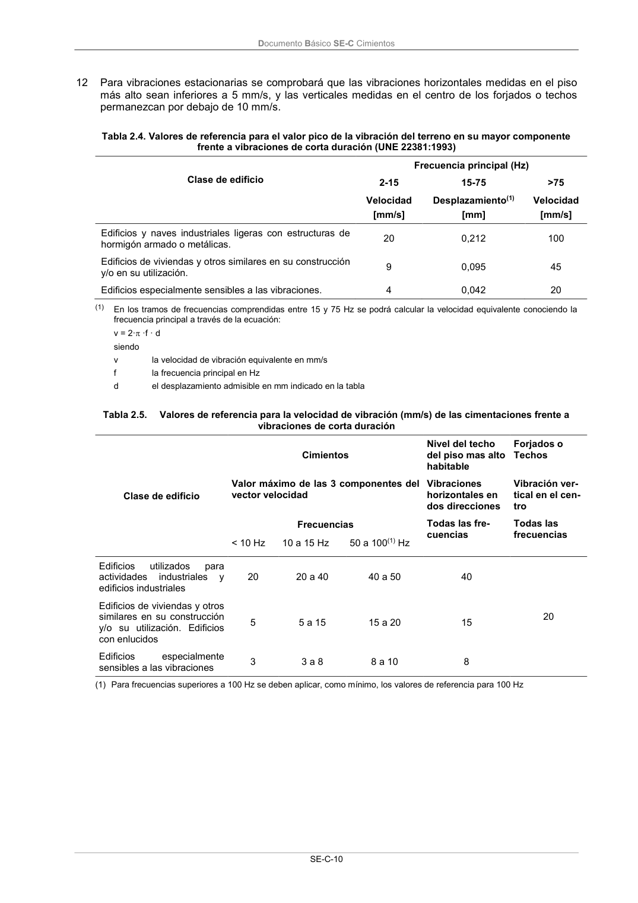
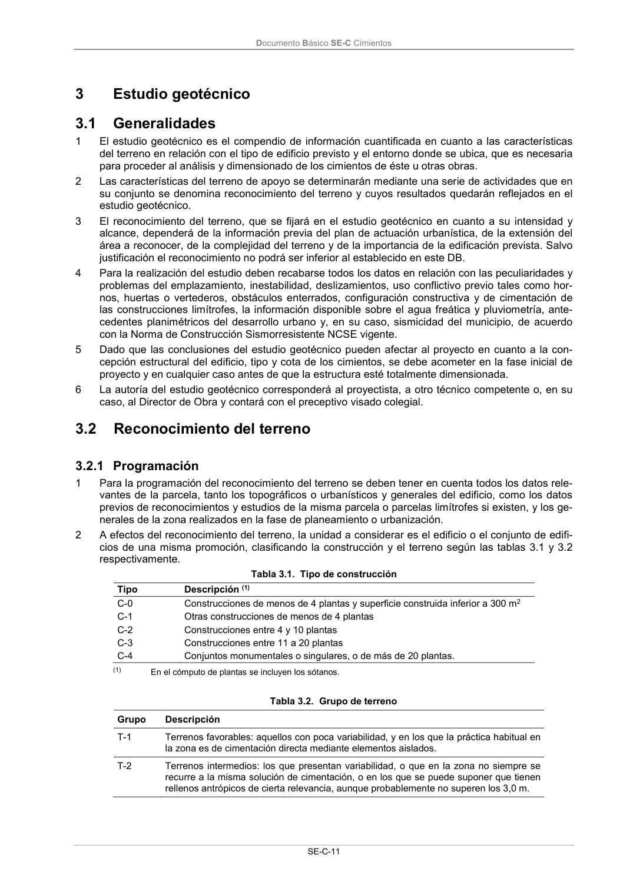

DB-SE-C · Fragmento de PDF p13 · versión 2019-12-20 · capa oficial
Formatos: JSON compacto · Markdown · PDF fuente
Ámbito del documento · texto del ámbito · documento y tablas
ID técnico a0037 · PDF pág. 13-16 · jerarquía no validada por persona · no es capítulo: sin_linea_de_encabezado · padre: raíz · literal original en el contenido: «2.4.3 Estados límite de servicio 2.4.3.1 Verificaciones a efectuar»
2.4.3 Estados límite de servicio 2.4.3.1 Verificaciones a efectuar 2.4.3.1 Verificaciones a efectuar 1 Para las diferentes situaciones de dimensionado se deben verificar los estados límite de servicio correspondientes, según se indica en el apartado 2.2.1.3. 2 Los módulos de deformación del terreno necesarios para la verificación de un adecuado comporta- miento de la cimentación en servicio se representarán por sus valores medios representativos. 3 El comportamiento adecuado de la cimentación, en relación con un determinado criterio, queda verificado si se cumple, para las situaciones de dimensionado pertinentes, la condición: Eser Clim (2.5) siendo Eser el efecto de las acciones para una determinada situación de dimensionado; Clim el valor límite para el mismo efecto. 4 El valor de cálculo de los efectos de las acciones se determinará, para cada situación de dimensio- nado y cada criterio a verificar, a partir de la combinación de acciones que le corresponda entre las indicadas en el apartado 4.3.2 del DB-SE o según el apartado 2.3.2.2. 5 Los valores límite para los distintos efectos de las acciones deben estar en concordancia con el objetivo de cada comprobación específica y se deben determinar para cada caso en el proyecto. 6 Para la determinación de los valores límite de los movimientos de la cimentación se tendrán en cuenta los siguientes aspectos: a) grado de fiabilidad en la estimación de dichos movimientos, en los casos de que se utilicen métodos alternativos a los indicados en este DB; b) posibles movimientos del terreno y su evolución en el tiempo; c) tipo de estructura y materiales del edificio; d) tipo de cimentación y características del terreno; e) distribución de cargas en el edificio; f) proceso constructivo del edificio; g) uso que se vaya a dar al edificio. 7 Los desplazamientos y deformaciones admisibles de las estructuras o servicios próximos, ajenos a la obra proyectada, se definirán en función de sus características y estado. 8 La verificación de los estados límite de servicio relacionados con los movimientos de la cimentación podrá llevarse a cabo, mediante criterios basados en valores límite para los siguientes parámetros (véase Figura 2.1): Figura 2.1. Definiciones básicas del movimiento de cimentaciones Documento Básico SE-C Cimientos SE-C-9 a) asiento, s, definido como el descenso de cualquier punto de la cimentación de un edificio (Ej.: sA); b) asiento diferencial, s, definido como la diferencia de asiento entre dos puntos cualesquiera de la cimentación; A B AB s s s (2.6) c) distorsión angular, , definida como el asiento diferencial entre dos puntos dividido por la dis- tancia que les separa. AB A B AB AB AB L s s L s (2.7) Se denomina giro relativo o rotación relativa cuando el asiento diferencial está referido a la distancia medida según la línea que define la inclinación media de la cimentación (línea A’ D’ en la Figura 2.1); d) inclinación, , definida como el ángulo girado con respecto a la vertical según la línea media que define la posición deformada de la cimentación; e) desplazamiento horizontal, x, definido como el movimiento horizontal de cualquier punto de la cimentación (Ej: xA); f) desplazamiento horizontal diferencial, x, definido como la diferencia de movimiento horizontal entre dos puntos cualesquiera de la cimentación; A B AB x x x (2.8) g) distorsión horizontal definida como el desplazamiento horizontal diferencial entre dos puntos dividido por la distancia que los separa. AB A B AB AB AB L x x L x (2.9) 9 En el caso de que no se especifiquen en el proyecto los valores límites de servicio de los movimien- tos de la cimentación del edificio podrán adoptarse los indicados en las tablas 2.2 y 2.3. Tabla 2.2. Valores límite basados en la distorsión angular Tipo de estructura Limite Estructuras isostáticas y muros de contención 1/300 Estructuras reticuladas con tabiquería de separación 1/500 Estructuras de paneles prefabricados 1/700 Muros de carga sin armar con flexión cóncava hacia arriba 1/1000 Muros de carga sin armar con flexión cóncava hacia abajo 1/2000 Tabla 2.3. Valores límite basados en la distorsión horizontal Tipo de estructura Limite Muros de carga 1/2000 10 En los capítulos relativos a los diferentes tipos de cimentación se encuentran otros criterios de veri- ficación de la aptitud al servicio de éstas relacionados más específicamente con los materiales y procedimientos de construcción empleados. 11 Para las vibraciones previstas de corta duración se comprobará que los valores máximos de los componentes del vector velocidad del terreno y cimentación quedan por debajo de los valores esta- blecidos en las tablas 2.4 y 2.5. Documento Básico SE-C Cimientos SE-C-10 12 Para vibraciones estacionarias se comprobará que las vibraciones horizontales medidas en el piso más alto sean inferiores a 5 mm/s, y las verticales medidas en el centro de los forjados o techos permanezcan por debajo de 10 mm/s. Tabla 2.4. Valores de referencia para el valor pico de la vibración del terreno en su mayor componente frente a vibraciones de corta duración (UNE 22381:1993) Clase de edificio Frecuencia principal (Hz) 2-15 15-75 >75 Velocidad [mm/s] Desplazamiento(1) [mm] Velocidad [mm/s] Edificios y naves industriales ligeras con estructuras de hormigón armado o metálicas. 20 0,212 100 Edificios de viviendas y otros similares en su construcción y/o en su utilización. 9 0,095 45 Edificios especialmente sensibles a las vibraciones. 4 0,042 20 (1) En los tramos de frecuencias comprendidas entre 15 y 75 Hz se podrá calcular la velocidad equivalente conociendo la frecuencia principal a través de la ecuación: v = 2· ·f · d siendo v la velocidad de vibración equivalente en mm/s f la frecuencia principal en Hz d el desplazamiento admisible en mm indicado en la tabla Tabla 2.5. Valores de referencia para la velocidad de vibración (mm/s) de las cimentaciones frente a vibraciones de corta duración Clase de edificio Cimientos Nivel del techo del piso mas alto habitable Forjados o Techos Valor máximo de las 3 componentes del vector velocidad Vibraciones horizontales en dos direcciones Vibración ver- tical en el cen- tro Frecuencias Todas las fre- cuencias Todas las frecuencias < 10 Hz 10 a 15 Hz 50 a 100(1) Hz Edificios utilizados para actividades industriales y edificios industriales 20 20 a 40 40 a 50 40 20 Edificios de viviendas y otros similares en su construcción y/o su utilización. Edificios con enlucidos 5 5 a 15 15 a 20 15 Edificios especialmente sensibles a las vibraciones 3 3 a 8 8 a 10 8 (1) Para frecuencias superiores a 100 Hz se deben aplicar, como mínimo, los valores de referencia para 100 Hz Documento Básico SE-C Cimientos SE-C-11 3



PDF fuente redistribuible: copia fiel enlazada en esta página (SHA256 verificado).